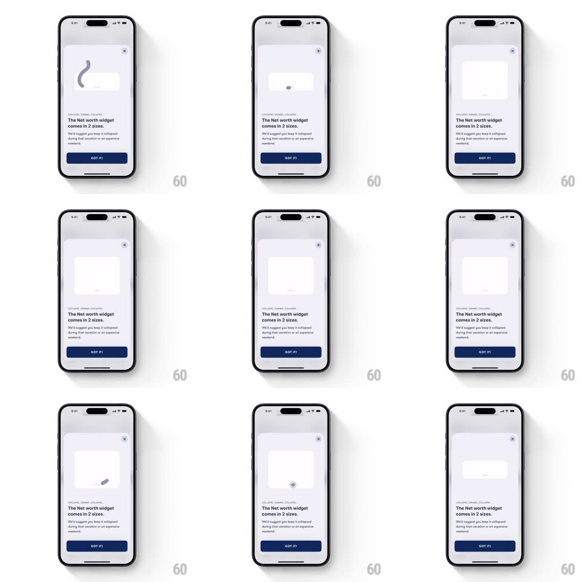

Media
Frame-by-frame

Rebuild this animation 1:1: Fold's widget-size demo sheet - inside the explainer sheet, a widget container loops through expanding, drawing an abstract line illustration, and collapsing to show the two size options.

Rebuild this animation 1:1: Fold's widget-size demo sheet - inside the explainer sheet, a widget container loops through expanding, drawing an abstract line illustration, and collapsing to show the two size options. ## Integration Integration: stack-agnostic spec - springs given as stiffness/damping, timed motions as duration + curve; map every value to your framework and animation library of choice. ## Scene A light bottom sheet with a close X: a demo area up top, then the copy "The Net worth widget comes in 2 sizes." with a supporting line and a navy GOT IT button. ## Motion spec Pattern: looping widget expand / draw / collapse, ~3s per cycle. - Expand: the collapsed widget pill grows to its large card size (spring ~300/22, 450ms), corner radius animating with it. - Draw: inside the expanded card, an abstract line illustration draws itself stroke by stroke (stroke-dash reveal, ~1.2s, ease-in-out), like a signature being written. - Hold: the finished card rests (~600ms). - Collapse: the card shrinks back to the pill (spring ~340/26, 400ms) as the illustration fades (200ms); the loop restarts after a short pause. ## Calibration - The loop is seamless and continuous - it demonstrates, so it never stops while the sheet is open. - The stroke draw follows one continuous path, not independent segments. ## Reduced motion Static expanded card with the illustration already drawn. ## Don't miss - Size change and corner radius animate together - the pill morphs into the card, not a crossfade between two views. - Copy and button stay still; only the demo area animates.